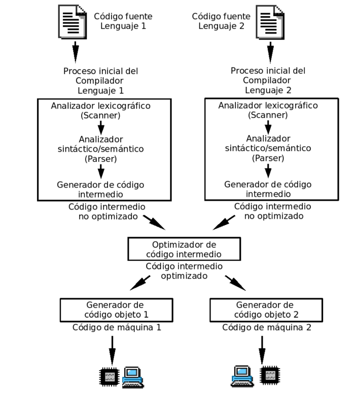
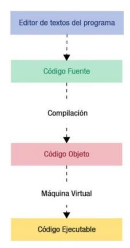
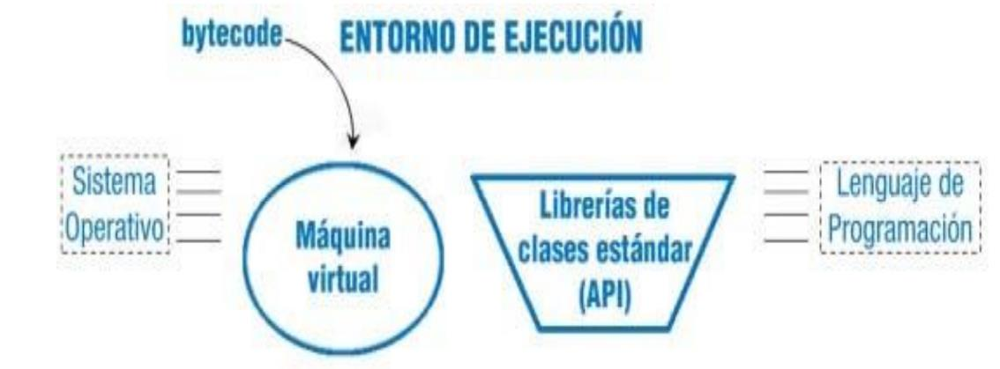

Proceso de obtención de código. Tipos de código
Los traductores son programas cuya finalidad es traducir lenguajes de alto nivel (en los que se programa) a lenguajes de bajo nivel como ensamblador o código máquina. Existen dos grandes grupos de tipos de traductores: los compiladores y los intérpretes.
Un intérprete traduce el código fuente línea a línea: primero traduce la primera línea, detiene la traducción y, posteriormente, la ejecuta, y así sucesivamente. El intérprete tiene que estar en memoria ejecutándose para poder ejecutar el programa. Al igual que el intérprete, el código fuente tiene que estar también en memoria.

Un compilador traduce el código fuente a código máquina. El compilador solamente está en la máquina de desarrollo. El código generado solo funcionará en una máquina con un hardware y un software determinados. Si cambian de hardware o software, hay que volver a recompilarlo.
En el proceso de compilación, primero se realiza un preprocesado del código. Todos los comandos de preprocesamiento se ejecutan y traducen.
Una vez realizado este paso, se compilan los ficheros del código fuente generándose un código intermedio. Existen muchos compiladores de código intermedio a código máquina y el objetivo de este paso es reutilizar dichos compiladores, puesto que son rápidos, eficientes, están probados y reducen el tiempo de desarrollo.
El código intermedio, generalmente, vuelve a compilarse y traducirse a ensamblador o código objeto directamente. Dependiendo de lo eficiente que sea el compilador, estas fases llevarán más o menos tiempo.
El código objeto es básicamente un código máquina; lo único que le falta es enlazarlo a las librerías para generar un programa ejecutable.
Fases de obtención de código
En este apartado vamos a ver las distintas fases en la obtención del código y los distintos tipos de código existentes dentro del desarrollo software.
Fuente
El código fuente es el conjunto de instrucciones que la computadora deberá realizar, escritas por los programadores en algún lenguaje de alto nivel.
Este conjunto de instrucciones no es directamente ejecutable por la máquina, sino que deberá ser traducido al lenguaje máquina, que la computadora será capaz de entender y ejecutar.
Un aspecto muy importante en esta fase es la elaboración previa de un algoritmo, que definimos como un conjunto de pasos a seguir para obtener la solución del problema. El algoritmo lo diseñamos en pseudocódigo y, con él, la codificación posterior a algún lenguaje de programación determinado será más rápida y directa. Para obtener el código fuente de una aplicación informática:
- Se debe partir de las etapas anteriores de análisis y diseño.
- Se diseñará un algoritmo que simbolice los pasos a seguir para la resolución del problema.
- Se elegirá un lenguaje de programación de alto nivel apropiado para las características del software que se quiere codificar.
- Se procederá a la codificación del algoritmo antes diseñado.
La culminación de la obtención de código fuente es un documento con la codificación de todos los módulos (cada parte, con una funcionalidad concreta, en que se divide una aplicación), funciones (parte de código muy pequeña con una finalidad muy concreta), bibliotecas y procedimientos (igual que la función, pero al ejecutarse no devuelven ningún valor) necesarios para codificar la aplicación.
Puesto que este código no es inteligible por la máquina, habrá que traducirlo, obteniendo así un código equivalente pero ya traducido a código binario que se llama código objeto, el cual no será directamente ejecutable por la computadora si éste ha sido compilado.
Un aspecto importante a tener en cuenta es su licencia. Así, en base a ella, podemos distinguir dos tipos de código fuente:
- Código fuente abierto: es aquel que está disponible para que cualquier usuario pueda estudiarlo, modificarlo o reutilizarlo.
- Código fuente cerrado: es aquel que no tenemos permiso para editarlo.
Objeto
El código objeto es un código intermedio. Es el resultado de traducir código fuente a un código equivalente formado por unos y ceros que aún no puede ser ejecutado directamente por la computadora.
Es decir, es el código resultante de la compilación del código fuente. Consiste en un bytecode (código binario resultante de la traducción de código de alto nivel que aún no puede ser ejecutado) que está distribuido en varios archivos, cada uno de los cuales corresponde a cada programa fuente compilado.
Sólo se genera código objeto una vez que el código fuente está libre de errores sintácticos y semánticos. El proceso de traducción de código fuente a código objeto puede realizarse de dos formas:
- Compilación: el proceso de traducción se realiza sobre todo el código fuente, en un solo paso. Se crea código objeto que habrá que enlazar. El software responsable se llama compilador (software que traduce, de una sola vez, un programa escrito en un lenguaje de programación de alto nivel en su equivalente en lenguaje máquina).
- Interpretación: el proceso de traducción del código fuente se realiza línea a línea y se ejecuta simultáneamente. No existe código objeto intermedio. El software responsable se llama intérprete (software que traduce, instrucción a instrucción, un programa escrito en un lenguaje de alto nivel en su equivalente en lenguaje máquina). El proceso de traducción es más lento que en el caso de la compilación, pero es recomendable cuando el programador es inexperto, ya que la detección de errores es más detallada.
El código objeto es código binario, pero no puede ser ejecutado por la computadora.
Ejecutable
El código ejecutable, resultado de enlazar los archivos de código objeto, consta de un único archivo que puede ser directamente ejecutado por la computadora. No necesita ninguna aplicación externa. Este archivo es ejecutado y controlado por el sistema operativo.
Para obtener un sólo archivo ejecutable, habrá que enlazar todos los archivos de código objeto, a través de un software llamado linker (enlazador: pequeño software encargado de unir archivos para generar un programa ejecutable) y obtener así un único archivo que ya sí es ejecutable directamente por la computadora. En el esquema de generación de código ejecutable vemos el proceso completo para la generación de ejecutables:

A partir de un editor, escribimos el lenguaje fuente con algún lenguaje de programación (en el ejemplo, se usa Java). A continuación, el código fuente se compila obteniendo código objeto o bytecode. Ese bytecode, a través de la máquina virtual (se verá en el siguiente punto), pasa a código máquina, ya directamente ejecutable por la computadora.
Es importante tener clara la diferencia entre:
- Código fuente: código escrito en un lenguaje de programación.
- Código objeto: resultado de compilar el código fuente. Puede ser código máquina o bytecode si es un lenguaje interpretado luego por una VM (virtual machine).
- Código ejecutable: resultado de compilar y enlazar el código con las librerías. Ejecutable directamente sobre una máquina concreta.
Máquinas virtuales
Una máquina virtual es un tipo especial de software cuya misión es separar el funcionamiento del ordenador de los componentes hardware instalados.
Esta capa de software desempeña un papel muy importante en el funcionamiento de los lenguajes de programación, tanto compilado como interpretado.
Con el uso de máquinas virtuales podremos desarrollar y ejecutar una aplicación sobre cualquier equipo, independientemente de las características concretas de los componentes físicos instalados. Esto garantiza la portabilidad (capacidad de un programa para ser ejecutado en cualquier arquitectura física de un equipo) de las aplicaciones.
Las funciones principales de una máquina virtual son las siguientes:
- Conseguir que las aplicaciones sean portables.
- Reservar memoria para los objetos que se crean y liberar la memoria no utilizada.
- Comunicarse con el sistema donde se instala la aplicación (huésped), para el control de los dispositivos hardware implicados en los procesos.
- Cumplimiento de las normas de seguridad de las aplicaciones.
Características de las máquinas virtuales
Cuando el código fuente se compila se obtiene código objeto (bytecode, código intermedio). Para ejecutarlo en cualquier máquina se requiere tener independencia respecto al hardware concreto que se vaya a utilizar. Para ello, la máquina virtual aísla la aplicación de los detalles físicos del equipo en cuestión.
Funciona como una capa de software de bajo nivel y actúa como puente entre el bytecode de la aplicación y los dispositivos físicos del sistema.
- La máquina virtual verifica todo el bytecode antes de ejecutarlo.
- La máquina virtual protege direcciones de memoria.
Entornos de ejecución
Un entorno de ejecución es un servicio de máquina virtual que sirve como base software para la ejecución de programas. En ocasiones pertenece al propio sistema operativo, pero también se puede instalar como software independiente que funcionará por debajo de la aplicación.
Es decir, es un conjunto de utilidades que permiten la ejecución de programas. Se denomina runtime al tiempo que tarda un programa en ejecutarse en la computadora.
Durante la ejecución, los entornos se encargarán de:
- Configurar la memoria principal disponible en el sistema.
- Enlazar los archivos del programa con las bibliotecas existentes y con los subprogramas creados. Considerando que las bibliotecas son el conjunto de subprogramas que sirven para desarrollar o comunicar componentes software pero que ya existen previamente, y los subprogramas serán aquellos que hemos creado a propósito para el programa.
- Depurar los programas: comprobar la existencia (o no existencia) de errores semánticos del lenguaje (los sintácticos ya se detectaron en la compilación).
El entorno de ejecución está formado por la máquina virtual y las API's (bibliotecas de clases estándar, necesarias para que la aplicación, escrita en algún lenguaje de programación, pueda ser ejecutada). Estos dos componentes se suelen distribuir conjuntamente, porque necesitan ser compatibles entre sí.
El entorno funciona como intermediario entre el lenguaje fuente y el sistema operativo, y consigue ejecutar aplicaciones. Sin embargo, si lo que queremos es desarrollar nuevas aplicaciones, no es suficiente con el entorno de ejecución.
Java runtime environment
En esta sección se va a explicar el funcionamiento del Runtime Environment del lenguaje Java (se hace extensible a los demás lenguajes de programación).
- Se denomina JRE al Java Runtime Environment (entorno en tiempo de ejecución Java).
- El JRE se compone de un conjunto de utilidades que permitirá la ejecución de programas Java sobre cualquier tipo de plataforma.

El JRE está formado por:
- Una Máquina Virtual Java (JMV o JVM si consideramos las siglas en inglés), que es el programa que interpreta el código de la aplicación escrito en Java.
- Bibliotecas de clase estándar que implementan el API de Java.
- Ambas (JVM y API de Java) son consistentes entre sí, por ello son distribuidas conjuntamente.